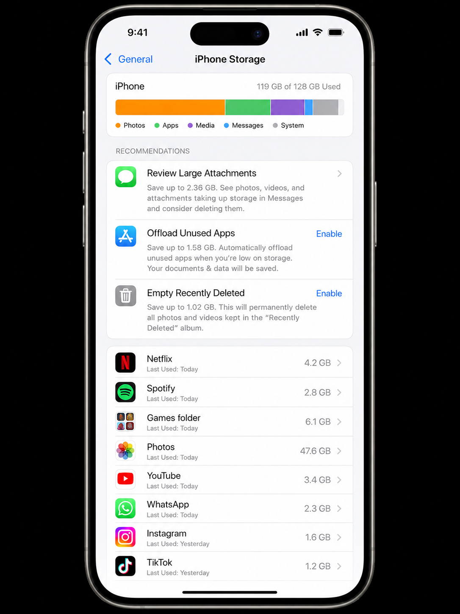
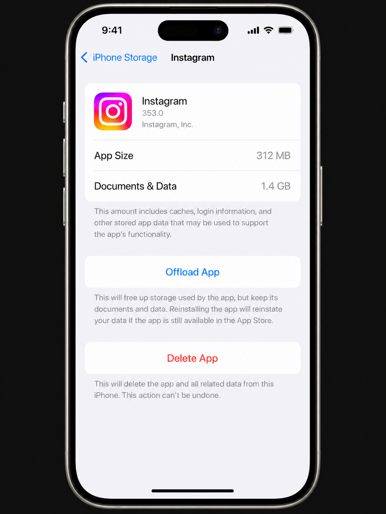

Before anything — check your storage breakdown
The biggest mistake people make when storage is full is deleting things randomly and ending up no better off. One minute spent looking at your storage breakdown tells you exactly which category is the problem — and which methods below will help you most.
iPhone
Go to Settings → General → iPhone Storage. Wait 15 seconds for the bar to fully load. You'll see a colour-coded chart — Photos, Apps, Media, Messages, System — with the size of each. The largest category is where to start.
Android
Go to Settings → Storage (exact path varies by manufacturer). You'll see a breakdown by category: Images, Videos, Audio, Apps, Other. Tap any category to drill into what's using the space.

The storage breakdown tells you exactly where to look. Photos and Apps are almost always the biggest categories — but it's often streaming downloads hiding inside "Media" that are the fastest win.
On iPhone, the grey "System Data" or "Other" category in the storage bar covers caches, logs, and temporary files. It can appear huge (10–20 GB) but shrinks on its own over time as iOS clears it. You can accelerate this by restarting your phone — iOS aggressively reclaims system caches after a restart.
Priority 1 — Streaming downloads (easiest, biggest gain)
Start here · 5 min · 2–10 GB typical savingDownloaded films, episodes, podcasts, and offline music playlists are the single safest category to delete. Everything is still accessible to stream — nothing is gone permanently. Yet most people have gigabytes of downloaded content they finished weeks ago and completely forgot about.
- Netflix: App → Downloads → tap the download icon on each title to remove it
- Disney+ / Apple TV+: My Library → Downloads → delete watched content
- Spotify: Settings → Storage → Delete Cache; then Your Library → remove offline playlists you don't need
- Apple Music: Library → Downloaded Music → Edit → Delete All, or remove individual albums
- Podcasts (Apple): Library → Downloaded Episodes → Edit → Delete
- Audible: Library → swipe on title → Remove Download (keeps it in your library)
- YouTube Premium: Library → Downloads → tap each video to remove
Priority 2 — Screenshots and auto-saved photos
High impact · 5–10 min · 500 MB – 5 GB typicalScreenshots are almost never memories — they're instructions, QR codes, memes, and delivery confirmations. They accumulate invisibly and are completely safe to delete in bulk. WhatsApp and Instagram auto-saves pile up in the background too.
iPhone
- Photos → Albums → Screenshots → Select → drag to select all → Delete
- Photos → Albums → WhatsApp → Select → Delete All
- Photos → Albums → Duplicates (iOS 16+) → Select All → Merge
Android
- Google Photos → Library → Screenshots folder → Select All → Delete
- Google Photos → Library → WhatsApp Images and WhatsApp Video folders → delete accumulated auto-saves
- Google Photos → Manage Storage → Blurry photos / Backed up screenshots → Delete

Tapping an app in iPhone Storage reveals the split between the app itself and its cached Documents & Data — a large Documents & Data figure means there's cache to clear.
Priority 3 — Large unused apps
Medium effort · 5 min · 1–8 GB typicalThe apps list in your storage settings is sorted by size — the biggest are at the top. Work through that list and ask yourself: when did I last use this? For anything you haven't opened in months, you have two options:
- Offload (iPhone only): Removes the app but keeps its data. The icon stays on your Home Screen. Tap it to re-download instantly. Best for apps you might use again.
- Delete: Removes the app and all its data permanently. Use this for apps you genuinely no longer need — old games, holiday apps, tools from a previous job.
Some apps store data locally that isn't backed up to a cloud service — certain games with local save files, note-taking apps you haven't synced, or health tracking apps. Before deleting, check whether the app's data is backed up to iCloud, Google Drive, or the app's own cloud service.
Priority 4 — Messages and their attachments
Medium effort · 5–10 min · 1–6 GB typicalYears of group chat photos, voice notes, and shared videos accumulate silently in Messages. A busy group chat over three years can easily consume 4–6 GB — all hidden from the main storage chart.
iPhone
-
1
Settings → General → iPhone Storage → Messages
Tap Review Large Attachments to see photos, videos, and files sorted by size.
-
2
Edit → select large items → Delete
Focus on videos and large photos. These are rarely worth keeping in a messages thread once the conversation is over.
-
3
Set auto-delete: Settings → Messages → Keep Messages → 1 Year
Prevents the backlog rebuilding. iOS will ask to delete older messages immediately when you change this setting.
Android
Open Google Messages → three-dot menu → Storage usage. You'll see conversations sorted by size. Tap the largest ones and delete threads or media you no longer need.
Priority 5 — App caches and browser data
Quick wins · 3 min · 500 MB – 2 GB typicalCaches are temporary files that apps store to load faster — but they accumulate indefinitely and can be cleared safely. Your apps re-build caches the next time you use them.
- Safari (iPhone): Settings → Safari → Clear History and Website Data
- Chrome (iPhone or Android): Three-dot menu → Settings → Privacy → Clear Browsing Data → Cached images and files
- Instagram: iPhone Storage → Instagram → Offload, then reinstall from App Store
- TikTok: TikTok app → Profile → three lines → Settings → Clear Cache
- Android (any app): Settings → Apps → select app → Storage → Clear Cache
What NOT to delete
Some things look like clutter but aren't:
- System files and OS data: Never delete anything in the "System" category — these are required for iOS/Android to function.
- App "Documents & Data" before checking what it is: Some apps store important local data here (health records, fitness history, offline maps). Tap the app first to understand what's inside.
- Photos without first backing them up: If you haven't set up iCloud Photos or Google Photos, make sure your photos are backed up before deleting anything from your camera roll.
- WhatsApp backups: Settings → General → iPhone Storage → WhatsApp → check the backup size. These can be large, but deleting them means losing your chat history if you ever re-install or change phones.
Quick reference — ranked by impact
| Action | Time | Typical saving | Risk |
|---|---|---|---|
| Delete streaming downloads (Netflix, Spotify, etc.) | 5 min | 2 – 10 GB | None |
| Delete Screenshots album | 3 min | 500 MB – 3 GB | None |
| Merge iOS Duplicates album | 5 min | 1 – 6 GB | None |
| Offload/delete large unused apps | 5 min | 1 – 8 GB | Very low |
| Delete Messages large attachments | 5 min | 1 – 5 GB | Low (irreversible) |
| Clear Safari / Chrome cache | 1 min | 200 MB – 2 GB | None |
| Clear individual app caches | 5 min | 500 MB – 3 GB | None |
| Enable Optimise iPhone Storage | 2 min | 5 – 15 GB | None |